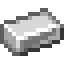
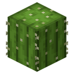

-
Матрица жителейTheEvilM#8025Координаты:► Нижний мир: -62 129 -53► Верхний мир: -527 125 -355Мир: Мир фермСовет: На входе есть книжка с правилами и инструкцией использования, обязательно прочитайте её.
-
Ферма ифритов-//-Координаты:► Нижний мир: 194 53 -608Мир: Мир построек 2Совет: Добираться по северной ветке хаба под бедроком.
-
Ферма проворств (Swift Sneak)TheEvilM#8025Координаты:► Нижний мир: -219 129 123Мир: Мир фермСовет: Внимательно читайте правила на ферме! Когда закончите фармить - бегите выключать рычаг, а потом обратно добивать оставшихся Варденов.По вопросам: TheEvilM#8025.
-
Ферма мёда-//-Координаты:► Нижний мир: -109 162 153Мир: Мир фермСовет: Всё что нужно - взять бутылки мёда с фермы, переделать в блоки мёда, а пустые бутылки сложить в нужный сундук. Читайте таблички.По вопросам: TheEvilM#8025.
-
Ферма железа-//-Координаты:► Нижний мир: -32 129 -54► Верхний мир: 260 y -430Мир: Мир фермСовет: Нельзя ставить никакие блоки на ферме! Если кто-то есть в АФК зоне - брать железо нельзя Начинаешь фармить - поставь табличку со своим ником на правый нижний сундук. По оканчании фарма не забудь убрать её! Когда забираете предметы, оставляйте разметку в сундуках!
-
Ферма чернил-//-Координаты:► Нижний мир: 285 129 -87Мир: Мир фермСовет: Чтобы ферма работала максимально продуктивно, стоять нужно в специальном афк споте.
-
Ферма квамп-//-Координаты:► Нижний мир: -900 129 -550Мир: Мир фермСовет: Общая ферма квамп всех цветов, имеется склад внизу, просьба соблюдать порядок на нём. Также приносит достаточно много магма слизи.
-
Ферма cкелетов-//-Координаты:► Верхний мир: 2522 y -911Мир: Мир фермСовет: Обычная ферма скелетов. ВАЖНО: ферма работает на двух спавнерах и для максимальной производительности, нужно стоять афк на досках.
-
Ферма цветов-//-Координаты:► Нижний мир: 304 129 -86Мир: Мир фермСовет: Работает ферма автоматически после того, как вы положили костную муку в сундук, как показано на скриншоте. На территории расположено 5 секций, около каждой есть обозначения цветов, которые фармит данный фрагмент. В распоряжении есть оранжевый, красный, белый, розовый, жёлтый, синий, светло-серый и пурпурный цвета. По всей территории расположены указатели, которые обозначают расположение каждого отсека. Желательно афкашить в специальном споте, чтобы вас не убили мобы и не воровать мобкап соседней фермы.
-
Ферма хоглинов №1-//-Координаты:► Нижний мир: -288 129 202Мир: Мир фермСовет: Находится на ответвление(207) красной линии. Ставишь табличку со своим ником и поднимаешься наверх в АФК спот. После фарма не забудь убрать табличку.
-
Ферма хоглинов №2IDarkSun#0617Координаты:► Нижний мир: -892 129 32Мир: Мир фермСовет: Находится на зеленой линии. Проверяешь лампу рядом с подъемом. Не горит - поднимаешься наверх в АФК спот.По вопросам: IDarkSun#0617
-
Ферма золотаqdesty#1997Координаты:► Нижний мир: 74 129 186► Верхний мир: 600 y 1450Мир: Мир фермСовет: Нельзя убивать мечом! Заходишь с одной стороны - выходишь с другой. Если фармишь только золото - поставь таблички "<Ник> фармит золото" у АФК спота и на сундуке с золотом снизу, после этого встань рядом с АФК спотом, не загораживая проход туда.По вопросам: qdesty#1997
-
Бетономешалка-//-Координаты:► Верхний мир: 70 у -140Мир: Мир фермСовет: Цемент ставить на красный факел. Бетон из механизма вручную не доставать, если вам нужен весь бетон, то используйте землю из сундука.
-
Ферма кораллов-//-Координаты:► Верхний мир: 59 63 -57Мир: Мир ресурсовСовет: Общественная ферма кораллов. Для использования нужно встать на поршень, нажать на рычаг, смотреть в канал с водой и зажать ЛКМ с инструментом на шёлковое касание в руке. По стеклянной лестнице можно пополнить костную муку, а справа можно забрать ресурсы. Ферма не ломается от ее отгрузки во включенном состоянии, но лучше её выключать. Обязательно прочитать правила. Не забирать ресурсы, если их в этот момент фармят.
-
Ферма лавы-//-Координаты:► Верхний мир: -2 74 19Мир: Мир ферм
-
Ферма капельников-//-Координаты:► Верхний мир: 16 83 5Мир: Мир ферм
-
Ферма кактусов-//-Координаты:► Верхний мир: 10 74 -22 и -14 74 18Мир: Мир ферм
-
 Ферма булыжника-//-Координаты:► Верхний мир: -23 66 -10Мир: Мир ферм
Ферма булыжника-//-Координаты:► Верхний мир: -23 66 -10Мир: Мир ферм -
Ферма базальтаL-//-Координаты:► Верхний мир: 23 67 12Мир: Мир ферм
-
Ферма пшеницы-//-Координаты:► Верхний мир: -90 71 0Мир: Мир фермСовет: После сбора пшеницы обязательно засадите обратно!
-
Ферма пороха-//-Координаты:► Нижний мир: 130 129 130Мир: Мир фермСовет: Общая ферма пороха на двух игроков. На ферме есть таблички и кафедра с правилами, пожалуйста ознакомьтесь. ЗАПРЕЩЕНО входить в порталы, ЗАПРЕЩЕНО залезать на самый верх механизма, ЗАПРЕЩЕНО заходить в порталы фермы через верхний мир. Если вы заметили что вагонетка застряла как показано на скриншоте, сломайте её и пустите по рельсам в любую сторону. Пожалуйста, уважайте других игроков и не берите чужой порох, не засоряйте территорию сундуками, группируйте свои сундуки там, где уже стоят чужие.
-
Ферма слизи-//-Координаты:► Нижний мир: -130 129 32Мир: Мир фермСовет: Общая ферма слизи, без необходимости вниз не спускаться. Лут приходит в сундук, афк стоять на стеклянной платформе.
-
Ферма перьев-//-Координаты:► Нижний мир: -130 129 32Мир: Мир фермСовет: Общая ферма перьев, без необходимости вниз не спускаться. Лут приходит в сундук, афк стоять на стеклянной платформе.
-
Ферма мха-//-Координаты:► Нижний мир: -130 129 32Мир: Мир фермСовет: Общая ферма мха, без необходимости вниз не спускаться. Лут приходит в сундук, афк стоять на стеклянной платформе.
-
 Ферма азалии-//-Координаты:► Нижний мир: -130 129 32Мир: Мир фермСовет: Общая ферма азалии, без необходимости вниз не спускаться. Лут приходит в сундук, афк стоять на стеклянной платформе.
Ферма азалии-//-Координаты:► Нижний мир: -130 129 32Мир: Мир фермСовет: Общая ферма азалии, без необходимости вниз не спускаться. Лут приходит в сундук, афк стоять на стеклянной платформе. -
Ферма слизи-//-Координаты:► Нижний мир: -140 129 115Мир: Мир фермСовет: Общественная ферма слизи на двух игроках. Перед тем как пользоваться фермой нужно прочитать правила.
-
Ферма стражей-//-Координаты:► Нижний мир:► Верхний мир:Мир: Мир ресурсовСовет: Общественная ферма гвардов на двух игроках. Один игрок - прогружает ферму в верхнем мире, другой - прогружает ее в нижнем мире. Перед использованием фермы нужно проверить, что вагонетка катается, если нет, то нужно нажать на кнопку рядом с раздатчиком. Для перехода в ручной режим убийства гвардов нужно встать на полублок между забором и оградой, нажать на рычаг, который находится на платформе.